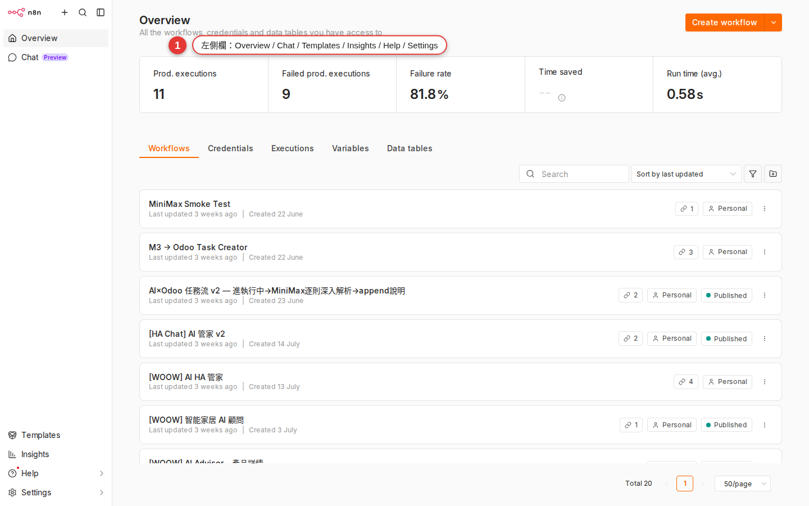
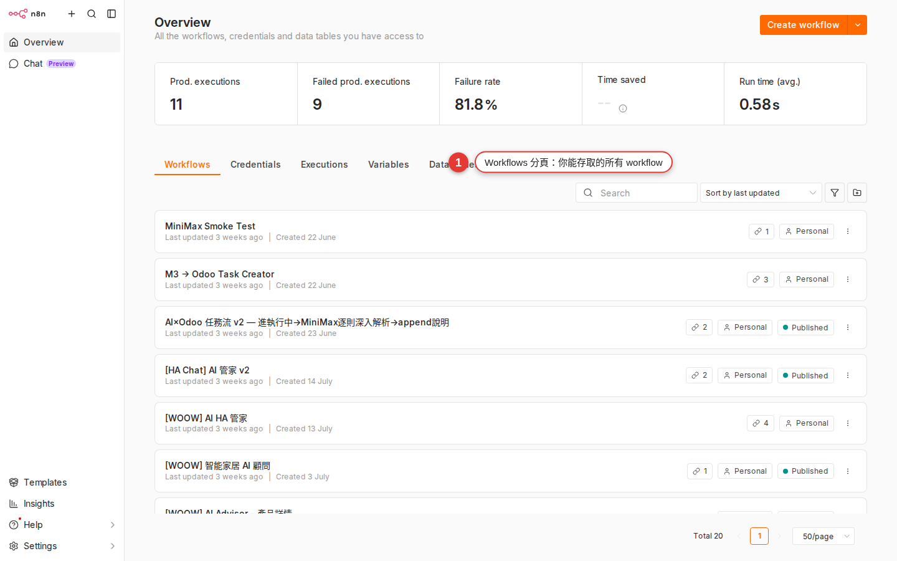
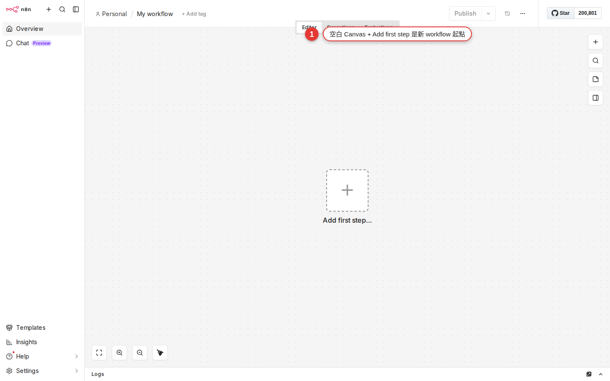
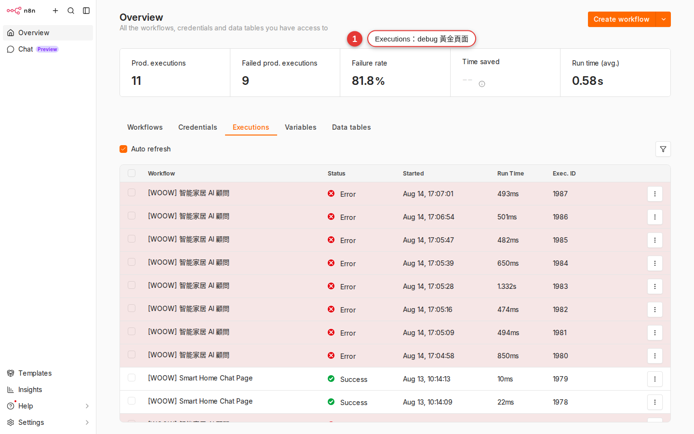
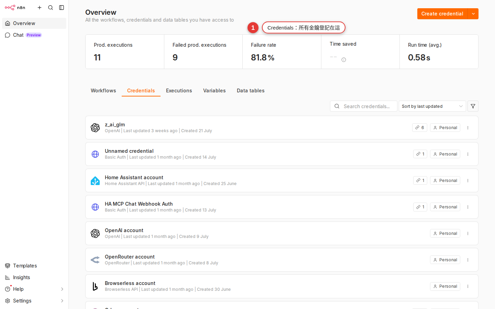

What the workspace looks like
Most people freeze for three seconds the first time they sign in to n8n — a row of unfamiliar names down the sidebar, a blank canvas in the middle, a pile of small icons in the bottom-right corner. This chapter walks you through every area once, so that when a later chapter tells you to "open Executions" or "open a Workflow and look at its settings", you know where to go.
Why you need the map first
The biggest difference between n8n and Zapier / Make is that it shows you everything — every workflow, every past run and every key sits in the same interface. That is a good thing, but the price is that there is a lot on screen when you start out.
If Chapter 2 got you signed in to n8n.woowtech.io, this workspace is what you are looking at right now. This chapter changes nothing — it only walks you through:
- What each of the seven items in the main sidebar on the left is for.
- What sits in every corner of the screen once you open a workflow.
- The Executions page, and why it is the thing that rescues you when you debug.
- Templates and Credentials — where the entry points you will keep coming back to are.
The seven items in the main sidebar, top to bottom
After you sign in, the dark strip on the far left of the screen is the main sidebar. Top to bottom, in order, it goes like this:
| Item | What it is for | When you land here |
|---|---|---|
| Overview | The home dashboard: workflows you opened recently, recent execution records, a summary of the numbers. | The first thing you see after signing in, and the fast way back to "the one you left half-finished yesterday". |
| Workflows | The list of every workflow you can access. You can search, filter, open in a new tab and star them. | You use it almost every time you come in; it is the main working surface. |
| Templates | The official template gallery: thousands of ready-made workflows you can copy into your workspace in one click. | When you want to copy someone else's work (Chapter 4 covers it in detail). |
| Credentials | Central storage for keys, OAuth authorizations and API tokens. | When you wire up a new SaaS service, or share an account with a colleague (Chapter 13 covers it in detail). |
| Executions | A record of every workflow run in the whole workspace. | The golden page for debugging — a workflow died overnight, or you want to see how many items ran yesterday. |
| Insights | Usage statistics and success-rate reports, Enterprise only. | WoowTech has no use for it yet, so grayed out is exactly what you should see. |
| At the very bottom of the sidebar: What's new (the bell) / Help (the question mark, linking to the docs and the community) / your avatar (open it to reach Settings and sign out) | Release announcements, links to the external docs and the way into your personal and workspace settings all live here. Settings is not a sidebar item of its own; you get to it through the avatar. | Changing the language, switching the theme, seeing what is new in a release, signing out. |
« / » arrow at the bottom of the sidebar to expand it.
What you see when you open a workflow
From the sidebar, click Workflows → open any workflow you like (if you have none yet, click + Create Workflow in the top-right corner to start an empty one). You land in the workflow editor, and the screen splits into several areas:

| Where | Element | What it does |
|---|---|---|
| Top left | The workflow name (click it to rename) | It shows up in the browser tab and in the Workflows list. |
| Top center | Three tabs: Editor / Executions / Evaluations | Switch views — edit, read past runs, look at evaluations (advanced). |
| Top right | Save + Execute Workflow + Publish / Unpublish | Save the draft, run one manual test, publish the current draft (so the schedule / Webhook / event triggers really start receiving events). |
| Center of the screen | Canvas | Every node and every connection sits here, and you can zoom and pan. |
| Bottom-right corner | A row of small tools: Zoom in / Zoom out / Fit view / Tidy up / Mini-map | Zooming and tidying the canvas. |
| To the right of the canvas, or on empty space | + Add first step (a new workflow) or the + button (between nodes) | Opens the nodes panel so you can add a node. |

What a node looks like on the canvas
Every node is a rectangular card on the canvas, and it always has the same few parts:
- The dot on the left (input): data flows in here. Trigger nodes have no input, because they are the head of the workflow.
- The node icon: Slack's
#, Gmail's envelope and so on, so you recognize the service at a glance. - The node name: by default it is the node type (for example
Schedule Trigger), and you can double-click it to rename it to something you understand (for exampleEvery day at 8 am). - The dot on the right (output): data flows out here. Some nodes have several outputs (the IF node, for example, has two: true / false).
A connection is the curve between two nodes: you drag from the previous node's output dot to the next node's input dot. Hover over a connection and an × appears so you can delete it.
Click a node and a settings panel slides out from the right. It usually has three tabs:
| Tab | Contents |
|---|---|
| Parameters | Every field on this node (which API to call, which message to send, which field to read). |
| Settings | Node-level settings: whether to continue on error, how many retries, notes, the node ID. |
| Output (only after a run) | The data this node produced on its last run. You can switch between Table / JSON / Schema / Binary. |
The nodes panel in detail
Right-click empty canvas or press Tab, click the + between two nodes, or click the + Add first step button in the middle of an empty workflow — each of them slides the nodes panel in from the right. It is the only way to add a node.
There is a search box at the top of the panel, and typing the service name (slack, gmail, sheet) is the fastest route. Below it, the list opens into two top-level groups:
| Category | What it means | Example |
|---|---|---|
| Triggers | The start of a workflow — it decides when the workflow runs. A workflow usually has only one Trigger. | Schedule Trigger (the time comes round), Webhook (something outside calls in), Gmail Trigger (a new message). |
| Actions | The body of a workflow — the nodes that do the work, whether that is posting to Slack, writing to a sheet or calling an API. | Slack, Google Sheets, HTTP Request, OpenAI. |
Below that, nodes are grouped again by purpose (Communication, Data & Storage, Marketing, Development, AI and so on). If you cannot find one, search for it: n8n ships several hundred nodes, and most of them are found by searching rather than by browsing the categories. Chapter 7 takes the three node types apart in full.
What the Executions page is for
There are two places to find Executions:
- Executions in the main sidebar: every execution record for every workflow in the workspace, filterable by workflow.
- The Executions tab at the top of a workflow: only that workflow's own records.
Each record is a complete snapshot of one run of that workflow, and it holds:
| Field | What it tells you |
|---|---|
| Status | Success (green) / Error (red) / Running (a blue spinner) / Waiting (sitting on a Wait node). |
| Start time | When it was triggered. |
| Run time | How many seconds it took in total. Once that gets long, start worrying about a timeout. |
| Trigger mode | Whether a schedule ran it, someone pressed Execute by hand, or a webhook called in. |
| The data at every node | Open a record and walk it node by node: what input each node took, what output it produced, and which line of which node failed. |

Where the Templates entry point is
Both Templates entry points get you there:
- Templates in the main sidebar: straight into the gallery.
- The top-right corner of the Workflows page has a "Templates" button (some versions call it Browse templates).
Once you are in, here is what you can do — none of it urgent:
-
Search, or browse by category
Type a keyword into the search box (
slack digest,ai chat), or filter with the categories on the left (AI, Marketing, Sales, DevOps and so on). -
Preview what the workflow looks like
Open a template and you get a thumbnail, the nodes it uses, the author, the download count and a short description — much like an app page in the App Store.
-
Use workflow, in one click
Press the Use workflow button and n8n copies the template into your workspace as a new workflow, ready for you to open and edit. The original template is left untouched.
How to pick a good template, how to see which credentials a template needs, and which fields to change once you have pasted it in: Chapter 4 walks through all of it once, step by step.
Where the Credentials page is
Click Credentials in the sidebar and you get every credential you have access to in this workspace: Slack Bot Token, Google OAuth, Gmail, OpenAI API Key, HTTP Header Auth and so on.
Each credential shows:
- The credential name, which you choose yourself (for example
Slack - #general notifications). - The type (Slack API, Google Sheets OAuth2 and so on).
- The owner, and who it is shared with.
- When it was created and last edited.

Three handy tools in the bottom-right corner
Plenty of people go a whole year without clicking the row of small buttons in the bottom-right corner of the canvas, and they are lifesavers:
| Button | Shortcut | When to use it |
|---|---|---|
| Zoom in / Zoom out (+ / −) | The scroll wheel works too | A node is too small to read, or you want the detail. |
| Fit view (the grid icon) | — | Scales the whole workflow to fit the screen exactly. The first thing to try when you cannot find a node. |
| Tidy up (the broom / align icon) | — | Lines up a mess of nodes automatically — 10 times faster than dragging them by hand. |
| Mini-map (the thumbnail) | — | Expands the small map in the bottom-right corner, for jumping across a large workflow (20+ nodes). |
Common pitfalls
-
The workflow opens completely blank
That is normal — it is a brand-new, empty workflow. There is a + Add first step button in the middle; click it and the nodes panel appears, showing Triggers only. Pick a Trigger and start.
-
Nodes will not move, or settings will not change
Most likely you do not have Editor permission, only Viewer. A "Read only" notice appears in the top-right corner of the page. Ask the workspace admin to raise your permission, or to share the workflow with you.
-
The connection will not attach
You have to drag from the output dot (on the right of the node) to the input dot (on the left of the next node). Do not let go part way; when you get close to the target dot it lights up green and you can release. Dragging the other way, input to output, does not work, and that is deliberate.
-
You cannot find the run you just made
Two places show it: the Executions tab at the top of the workflow (this workflow only), or Executions in the sidebar (everything). If you ran it by hand with Execute Workflow, the record is labeled "Manual"; if a Trigger fired it, the label is "Trigger".
-
You zoomed the canvas until you lost track of where you are
Press Fit view (the grid icon) in the bottom-right corner and the whole workflow scales back to fit the screen. It is the first thing to try when you cannot find a node, and more intuitive than any shortcut.